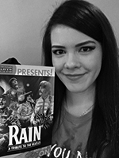

About the Author

The author of this site, Angie, first heard of the Beatles when her father showed her an animated movie, called Yellow Submarine when she was very little. Sure, the flashy graphics and sequences might have been a lot for her to take in, but what really stuck with her for the rest of her life was the music. One of the songs in the movie, Nowhere Man, was unlike any song she heard before. After listening to so much 90's pop music in her early life, it was quite an enlightenment for her to hear such specatacular music from way before time. The harmonies, the guitar runs, the flow itself completely captivated her. She went on to discover more of those captivating 60s tunes and would later learn how huge of an impact those four friends made on the world. With this site, she hopes other fans will enjoy and appreciate her contribution to the fandom.
This picture of Angie was taken Feb. 2018 at the the newly renovated Music Hall in Cincinnati when she got to see Rain: A Tribute to the Beatles. Now that was a real treat for her!